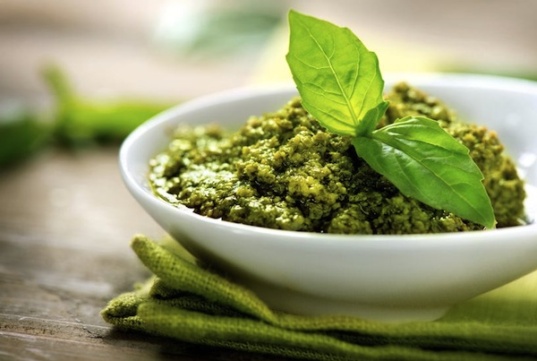

Cardápio
Prato Principal

Molho Pesto
Ingredientes
- 50 gramas de manjericão fresco (folhas apenas)
- 2 dentes de alho
- 100 ml de azeite extra virgem de oliva
- 6 colheres de sopa de queijo parmesão ralado (cerca de 70 gramas)
- 2 colheres de sopa de queijo pecorino ralado (cerca de 30 gramas). Importante: se você não encontrar o queijo pecorino, você pode substituí-lo com mais queijo parmesão
- 1 colher de sopa de pinoli (cerca de 30 gramas)
Modo de Preparo
- A receita original pede o uso de um socador para bater as folhas de manjericão, mas para facilitar as coisas te passamos a receita utilizando um liquidificador.
- Para começar, é importante lavar as folhas de manjericão mas não com água e sim com um pano úmido.Este processo é muito importante para obter um excelente molho pesto.
- Uma vez que as folhas de manjericão devem estar secas e não podem estar enrugadas.
- Coloque todos os ingredientes, menos o queijo, no liquidificador.
- Bata tudo lentamente até que a mistura vire um composto líquido e cremoso.
- Neste ponto, adicione o queijo e mexa bem até que tudo fique bem misturado.
-
Mantenha o molho pesto na geladeira por durante 2-3 dias num recipiente hermético, tendo o cuidado de cobri-lo com uma camada de azeite extra virgem de oliva.